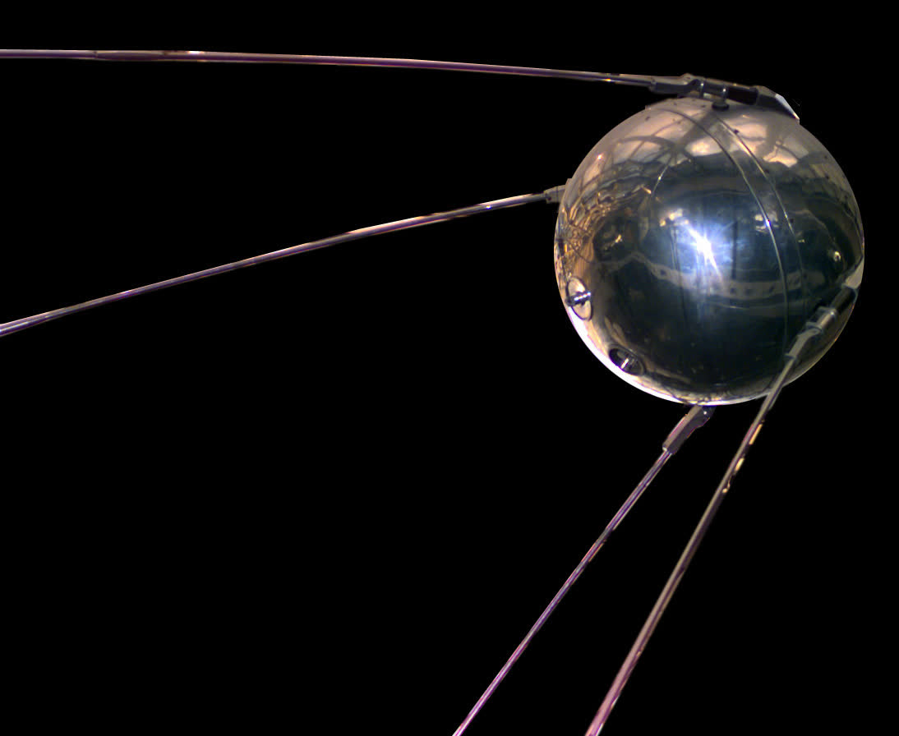
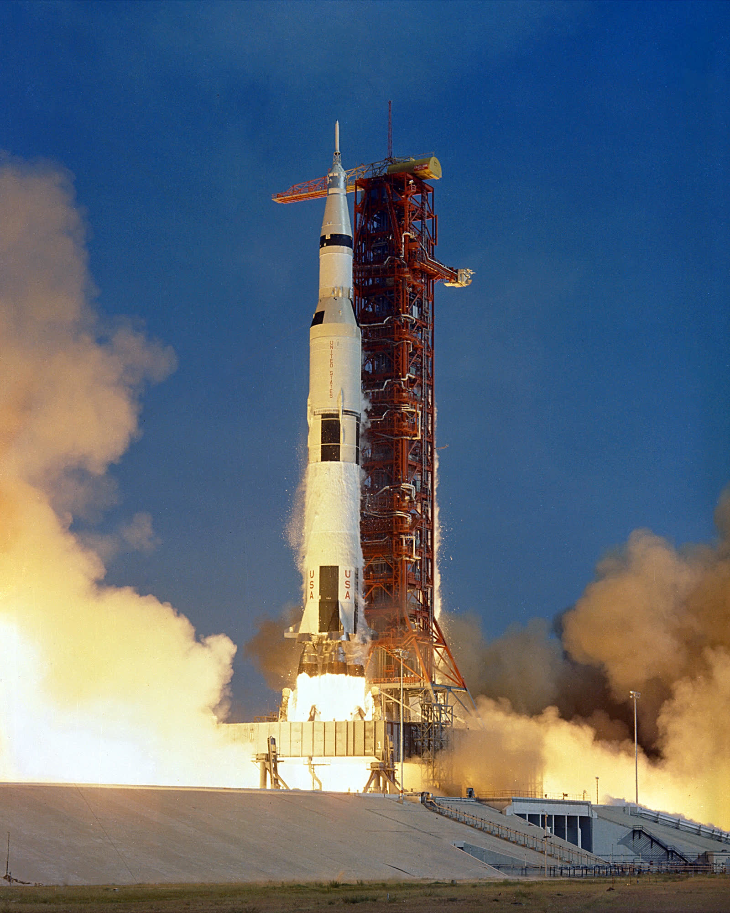
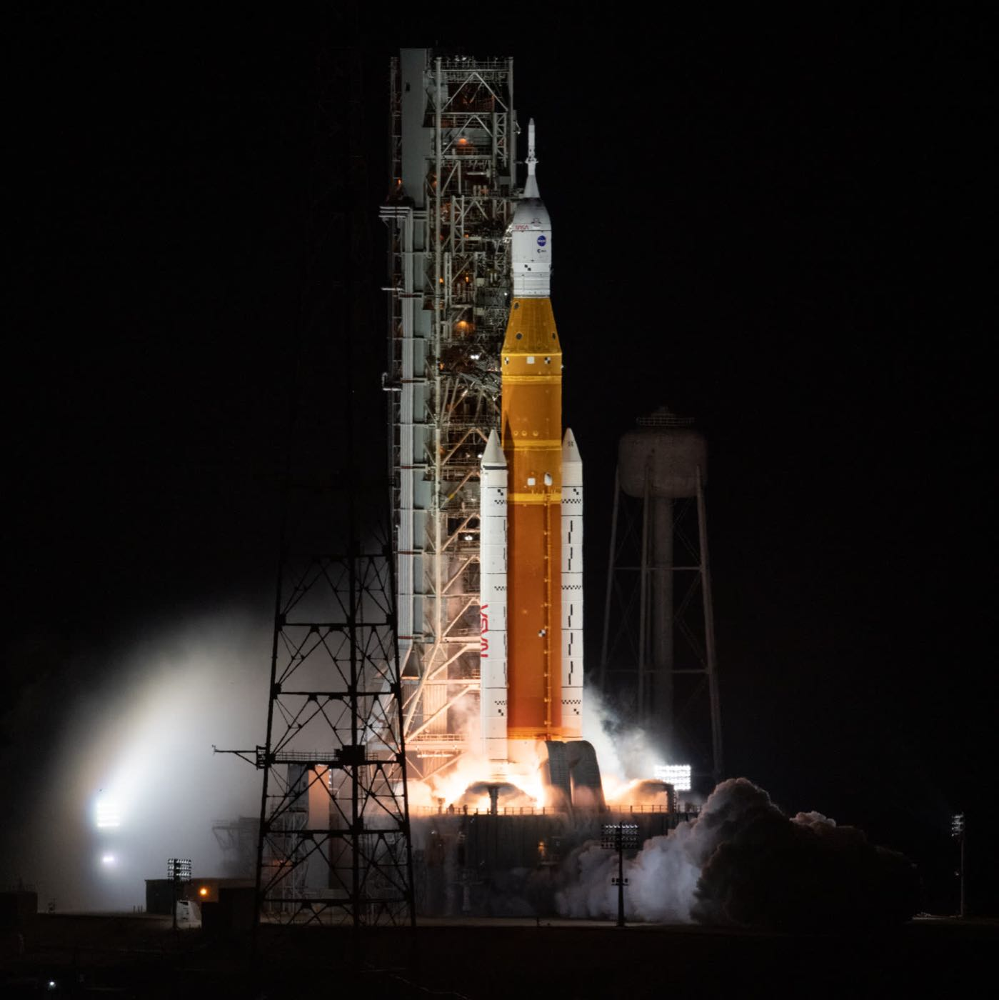
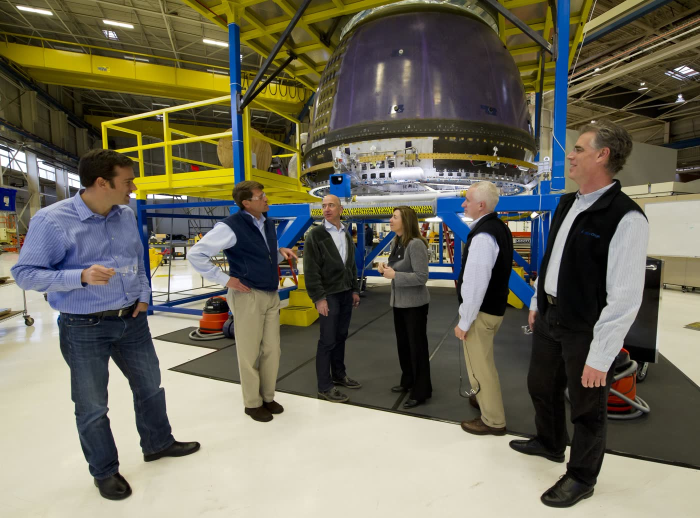
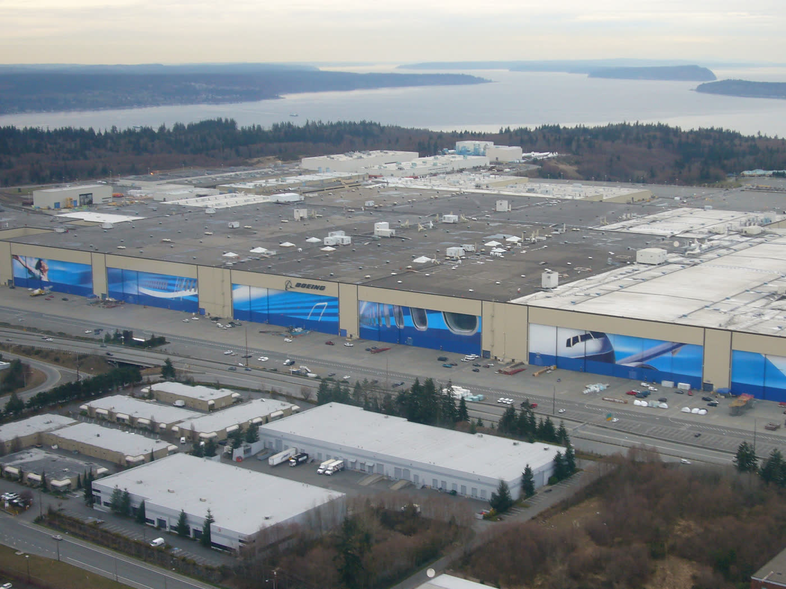
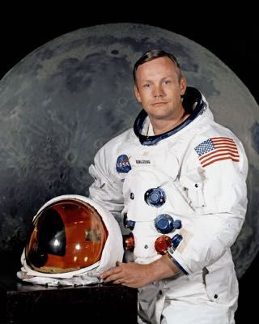

The first race ended on the Moon in 1969. A new one is underway — with more players, and no single tape to break. Here's how we got here, and where that new race stood as of August 2026.
Updated August 18, 2026 — a dated snapshot, not an ongoing claim
The first space race was a two-country contest with one finish line. This one is messier. NASA still wants to put people on the Moon. Companies are building the landers. China is running a lunar program of its own. Dates slip. Spaceflight is hard, and the plans get rewritten in public.
As of August 2026, NASA's next big crewed test is not a landing. Artemis III is supposed to send four astronauts into low Earth orbitA path close to Earth, the same kind of orbit the International Space Station uses — not a trip to the Moon. on Orion, where they will practice meeting and dockingConnecting two spacecraft in space so they can join together. with test versions of Moon landers from Blue Origin and SpaceX. Those test vehicles are not ready to set a crew down on the lunar surface. NASA has said the first crewed landing under this new sequence is planned for Artemis IV, in early 2028.NASAWikipedia
Boeing's Starliner is a different capsule with a different job. It is meant for the International Space Station, not the Moon. After problems on its 2024 crewed test, the next flight is planned as uncrewed cargo. As of August 2026, Boeing told investors it was aiming for no earlier than the fourth quarter of 2026. NASA would not put a date on the calendar.Wikipedia
NASA's program to send astronauts back to the Moon and, later, to help prepare for Mars. It is named for the Greek goddess of the Moon — and for Apollo's twin sister.
The first space race had two superpowers and one finish line: the Moon. This one has governments and companies, and more than one finish line. Why might that make the story harder to tell — and harder to date?
It started with a beep. On October 4, 1957, the Soviet Union launched Sputnik 1The first human-made object to orbit Earth — a metal sphere about the size of a beach ball that sent a radio beep. — a metal sphere about the size of a beach ball. It circled Earth and sent a radio signal anyone with the right radio could hear. The United States had not expected to come in second.NASA

The beep was the sound. The fear was bigger. If a country could put a satellite in orbit, it might also send a missile across the world. That is why Sputnik landed in the middle of the Cold War — a long standoff between the United States and the Soviet Union. Space became a way to prove whose system worked better, without fighting a nuclear war.
Four years later, the Soviets did it again. On April 12, 1961, cosmonaut Yuri Gagarin became the first human to fly in space. The United States was not far behind. That same year, President John F. Kennedy made the next step public: land a man on the Moon and bring him home before the decade was over.NASA

On July 20, 1969, Neil Armstrong and Buzz Aldrin walked on the Moon while Michael Collins flew overhead. About 650 million people watched. The first race had a finish line, and the United States crossed it.NASA
The long rivalry, from the late 1940s to 1991, between the United States and the Soviet Union. It was called "cold" because the two sides avoided a direct shooting war with each other, even as they competed in almost every other way — including space.
Kennedy's Moon goal had a deadline: the end of the 1960s. Why might a public deadline change how a country spends money — and what it is willing to risk?
After Apollo, the United States flew the space shuttle for 30 years and helped build the International Space Station. People kept going to orbit. They just didn't keep going to the Moon. For about fifty years that finish line sat empty.

NASA's new program is an attempt to walk there again — but this time the field is crowded. The U.S. plan is called Artemis, after Apollo's twin sister. Artemis I, in 2022, sent an empty Orion capsule around the Moon. Later flights are supposed to carry astronauts, then land them near the Moon's south pole, where ice in the shadows might be useful for fuel and water. As of August 2026, NASA's published plan for the next big crewed test — Artemis III — is practice in Earth orbit with commercial lander companies, not a landing. The landing is planned later.NASA
NASA is not building those landers alone. SpaceX, founded by Elon Musk, already flies cargo and crews to the space station and is building a huge vehicle called Starship that NASA picked as one Moon lander. Blue Origin, founded by Jeff Bezos and based in Kent, Washington, is building another. NASA wants more than one company on purpose: if one design fails, the program still has a way down to the surface.NASA HLS
China is not waiting to be scored against Artemis. Its Chang'e program has landed robots on the Moon and brought samples home, and China has said it wants to send astronauts to the lunar surface later this decade. That is a second, separate program with its own dates and goals — not a point on a U.S. scoreboard.Wikipedia For a civics class, the question is not how a rocket works. It is who is racing, who is paying, and who gets to write the rules.
The spacecraft that would actually set astronauts down on the Moon. NASA is paying more than one company to build one, the way it pays more than one company to fly crews to the space station.
In the 1960s, only governments could afford a Moon shot. In this new race, NASA is buying landers from companies. What is gained by that — and what new risks show up when a landing depends on a private schedule?
You don't need a launch pad in the backyard to be in this story. One of the companies NASA picked to land astronauts on the Moon is headquartered a short drive from this school. Another famous Washington name is in space too — just not in the way a rumor might guess.

Blue Origin's headquarters is in Kent, south of Seattle, in the same metro area as Alderwood Middle School. NASA hired the company to build a Human Landing System: a spacecraft meant to carry astronauts from lunar orbit down to the surface. As of August 2026, that lander is still being developed. A test version is part of NASA's Artemis III docking plan in Earth orbit.NASA HLS

Boeing started in Seattle in 1916, and the Everett factory still builds jet airliners. Starliner is a Boeing capsule too — a NASA crew vehicle for the space station — but it is assembled in Florida, not in Everett. Both things can be true: Washington has a real space company in Kent, and Starliner is not built down the road from school.Wikipedia
As of August 2026, Starliner's next flight was planned as uncrewed cargo. Boeing said "no earlier than" late 2026. NASA had not announced a launch date. The news is that missing date, not a guess about which day it will finally fly.Wikipedia
Blue Origin's headquarters is in this state. Boeing's history is too. Does that change how you read NASA's Moon plans — or should a civics class treat a local company the same way it treats any other contractor?
The Soviet Union launches the first artificial satellite. Radios around the world pick up the beep.
Yuri Gagarin becomes the first human in space. Later that year, President Kennedy sets a Moon deadline for the decade.
Armstrong and Aldrin walk on the Moon. The first space race has a finish-line moment.
Apollo 17 is the last crewed Moon landing of the 20th century. No one has walked there since.
The United States stops flying its own crew vehicle for a while and buys seats on Russian Soyuz spacecraft.
A private American capsule starts flying NASA astronauts to the space station.
NASA sends an uncrewed Orion around the Moon on the Space Launch System rocket.
NASA turns Artemis III into an Earth-orbit docking test. The first crewed landing is planned for a later flight.
The first race had faces students can still name. Yuri Gagarin left Earth. Neil Armstrong stepped onto the Moon. Their flights are history. Today's company leaders are still writing the next chapter.
A Soviet pilot who completed one orbit of Earth on April 12, 1961, aboard Vostok 1. The flight lasted 108 minutes. By the time he was back on the ground, he was famous almost everywhere. He died in a training-jet crash in 1968, seven years after that orbit.

🌙An American test pilot and astronaut. On July 20, 1969, he became the first person to step onto the Moon. He later taught engineering and mostly stayed out of the spotlight. The photograph at the top of this page is one he took of Buzz Aldrin — you can see Armstrong reflected in the gold visor.
If you can, turn the sound on. The radio voices are part of what happened — not background music.
NASA — historic Apollo 11 landing footage and radio calls.
NASA — official recap of the Artemis I launch, November 16, 2022.
1. Why did a beep from a satellite scare people in 1957? What were they really afraid of?
2. Kennedy's Moon goal had a public deadline. Artemis dates have slipped more than once. What does a deadline change about money, risk, and how the story gets told?
3. NASA is buying Moon landers from companies instead of building only one government lander. What is gained by that — and what new risks show up when a landing depends on a private schedule?
4. Blue Origin's headquarters is in Kent. Boeing's history is in this state too. Should a civics class treat a local company differently from any other contractor?
5. This page sticks with Gagarin and Armstrong, not today's CEOs. Why might that be a good rule for a school page — and when might it hide something students should know?
Launch dates slip. If you are reading this well after August 2026, treat the Situation Update as history and check NASA's Artemis pages for a newer plan.
Student-friendly explainers, images, and classroom materials from the space agency itself.
What each Artemis flight is supposed to do, in NASA's own words.
The first Moon landing — the crew, the timeline, and the primary sources.
Why NASA hired more than one company to build a Moon lander.
The August 2026 snapshot on this page comes in part from this NASA update.
A separate robotic (and planned crewed) path to the Moon — not a U.S. scoreboard.